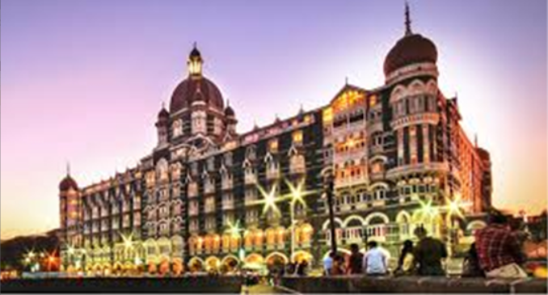

Notable TAJ

Two hotels of the Taj group, namely Rambagh Palace in Jaipur and the Taj Mahal Palace & Tower in Mumbai,
were ranked in 2013 by Condé Nast Traveler among its
"Top 100 Hotels and Resorts in the World".
In late 2013, the Indian Traveller magazine ranked Taj Lake Palace in Udaipur and Taj Exotica Resort
& Spa in Maldives as numbers 34 and 98, respectively, on its list of
"100 Best Hotels & Resorts".
Condé Nast Traveler also ranked the Taj Mahal Palace in Mumbai as number 13 on its list of
"Gold Standard Hotels" in 2014.
In 2005, a famous luxury hotel in New York city, The Pierre was acquired.